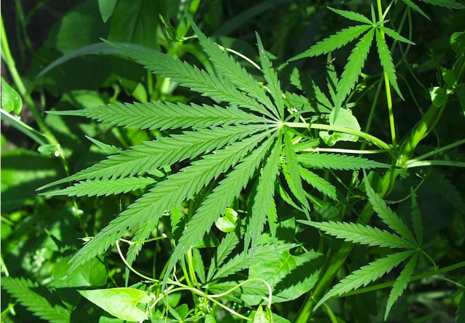

Marijuana As Muse
How Cannabis and Novelty-Seeking Affect Your Health
Jasen Talise
Spring 2011

Carl Sagan, Salvador Dali, and William Shakespeare all smoked cannabis.
In a recent interview with Anderson Cooper, Lady Gaga—former NYU Tisch
student who took home three awards at the Grammy’s this year—admitted
to her artistic relationship to the drug, claiming bluntly: “I smoke a
lot of pot when I write music.” Medicinal marijuana ameliorates nausea
and vomiting, stimulates hunger in chemotherapy patients, alleviates
back pain and lowers intraocular eye pressure. Considering the drug’s
many benefits, we may pose the same question the journal Clinical
Addiction Psychiatry asks, “One purpose of medicine, in addition to the
alleviation of suffering, is to improve the quality of life. A question
that arises in this context is: if we could enhance cognition in
disease, should we do it in health?” If yes, we might bring the
aforementioned artists back into the discussion, asking whether their
relationships with marijuana enhanced, if only even partly, their
cognitive creative processes. Research concerning both the
neurophysiological effects of marijuana on the brain and the
neurophysiological tendencies found in creative individuals brings to
light the ways in which marijuana may act as a muse to bolster
individuals to creative genius.
Current creativity research has discovered
common neurological occurrences that are associated with high human
creativity. One such occurrence is increased activity of the frontal
lobe. According to Alice Flaherty from the Department of Neurology at
Harvard Medical School, “When subjects with high and low creativity are
compared, the former have both higher baseline frontal lobe activity
and greater frontal increase while performing creative tasks.” Frontal
lobe activity generates creative output in two ways.
First, it stimulates creative drive.
Flaherty’s research found that deep brain stimulation near the nucleus
accumbens correlates to an increase in creativity. The nucleus
accumbens is a collection of neurons located on the outer parts of the
forebrain which plays an important role in reward, pleasure, laughter,
addiction, and rhythmic timing for musicians. The output neurons of the
nucleus accumbens project to the prefrontal cortex of the frontal lobe,
thereby establishing a connection between these two parts of the brain.
Flaherty points out that this connection, coupled with the nucleus
accumbens’ role in the limbic generation of drives, helps explain the
generation of creative drive via frontal lobe activity.
Second, the frontal lobe serves as the
headquarters for creative divergent thinking. As pointed out by
creativity researcher Crystal Gibson of Vanderbilt University,
“Divergent thinking is distinguished from convergent thinking, which is
defined by a narrowing of possible responses to reach the correct
solutions. In contrast, divergent thinking involves flexible ideation
to generate many responses to open-ended and multifaceted problems.”
Divergent thinking provides the foundation for creative production as
it entails the ability of an individual to think of solutions without
being limited by strict conceptual boundaries, thereby allowing one to
think outside the box. It is a type of thinking characterized by making
connections between ideas that would otherwise be left unconnected.
Considering this, marijuana may promote
creativity as it increases frontal lobe activity, primarily by
increasing cerebral blood flow (CBF) to this area. In studies done at
the Instituto Nacional de Psiquiatría Ramón de la Fuente, Mexico and
John Hopkins University, it was found that subjects with high creative
performance showed greater CBF activity in various locations in the
brain associated with the frontal lobe. Cerebral blood flow is the
amount of blood in the brain at any given time, and higher amounts in
specific areas of the brain indicate higher activity of those areas.
This is because neurons in the brain require energy when being used and
they receive this energy from the glucose and oxygen supplied by blood.
Experiments by Mathew and Wilson (1992) showed CBF tended to reach a
maximum effect in the frontal lobe after thirty minutes of cannabis
consumption. More recent research done by O’Leary et al in 2000 and
2007 confirm that marijuana increases normalized regional CBF to
various parts of the frontal lobe, including the orbital frontal
cortex, anterior cingulate cortex and the insular cortex. O’Leary’s
work juxtaposed to Flaherty’s observations suggests that marijuana’s
role in stimulating frontal lobe activity has the correlative effect of
promoting the creative drive and divergent thinking characteristic of
the creative process.